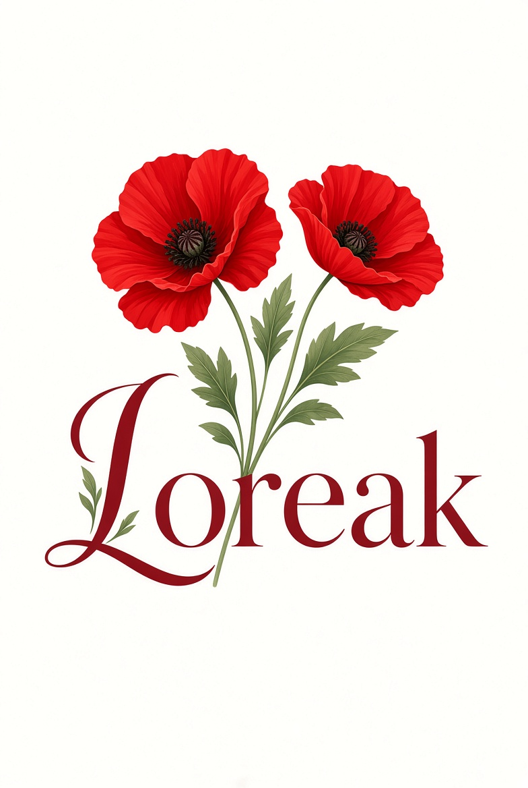

AVUI
—
Afegeix el primer període per començar.
🩸—Pròxim període
🌿—Dies fèrtils
🟣—Ovulació estimada
DlDtDcDjDvDsDg
PeríodeFèrtilOvulació
Registrar avui
Historial
Encara no hi ha cicles registrats.

Afegeix el primer període per començar.
Encara no hi ha cicles registrats.